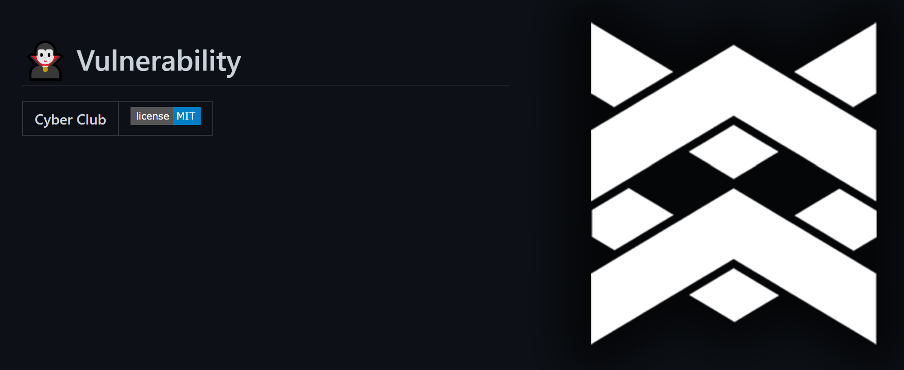
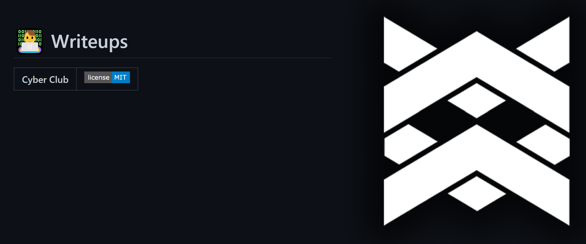
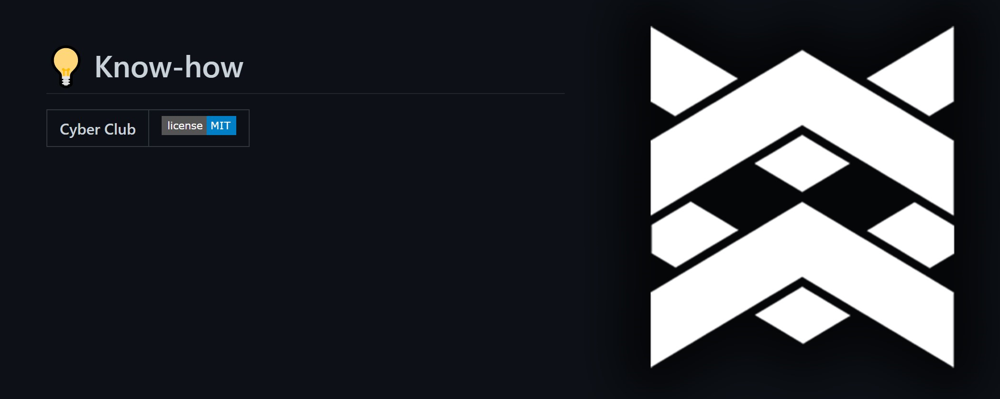

Cybersec
หัวข้อในด้านต่าง ๆ ในด้านของ Cyber Security ที่เราได้รวบรวมและจัดหมวดหมู่ไว้ให้แล้ว
Cybersec คืออะไร
👨🏫 Knowledge
Cybersec หรือ Cyber Security คือ การนำเครื่องมือทางด้านเทคโนโลยีและกระบวนการที่รวมถึง วิธีการปฏิบัติที่ถูกออกแบบไว้เพื่อป้องกันและรับมือที่อาจจะถูกโจมตีเข้ามายังอุปกรณ์เครือข่าย, โครงสร้างพื้นฐานทางสารสนเทศ, ระบบหรือโปรแกรมที่อาจจะเกิดความเสียหายจากการที่ถูกเข้าถึงจากบุคคลที่สามโดยไม่ได้รับอนุญาต
Confidentiality
หรือ การรักษาความลับของข้อมูล คือ การที่ระบุสิทธิในการเข้าถึงข้อมูลกับผู้ที่สามารถเข้าถึงได้ในแต่ละชุดเช่น
Integrity
หรือ การรักษาความถูกต้องของข้อมูล คือ การที่ระบุสิทธิของการแก้ไขข้อมูล และการรักษาความถูกต้องของข้อมูลให้มีความถูกต้องอย่างต่อเนื่อง
Availability
หรือ ความพร้อมใช้งานของข้อมูล คือ การที่ข้อมูลพร้อมให้เข้าถึงใช้งานได้ตลอดเวลา รักษาความต่อเนื่องในการให้บริการข้อมูล
อ่านเพิ่มเติม ได้ต่อที่ข้างล่างนี้เลย
🧛♂️ Vulnerability
🧛♂️ Vulnerability
ช่องโหว่ Cyber Security ในด้านต่าง ๆ ที่น่าสนใจ
👨💻 Writeups
👨💻 CTF Writeups
Writeups ของงาน Cyber Security CTF ต่าง ๆ ที่น่าสนใจ
🛠 Awesome tools
🛠 Tools

Tool ที่ใช้ในด้าน Cyber Security เจ๋ง ๆ ที่เราแนะนำ
🤷♂️ For Beginner
🤷♂️ Beginner

จุดเริ่มต้นในสาย Cyber Security ที่เราแนะนำ
💡 Know-how
👨🏫 Knowledge
ความรู้ด้าน Cyber Security ที่เราแนะนำ